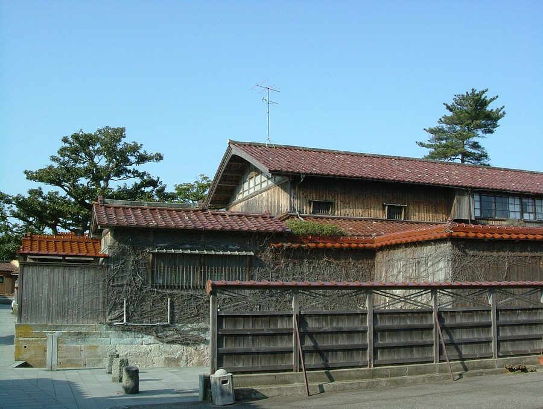
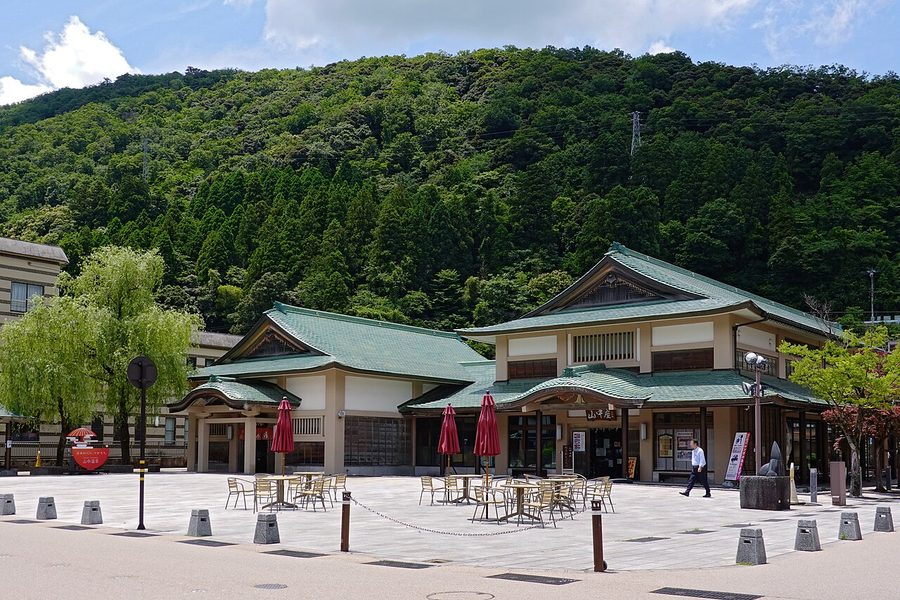
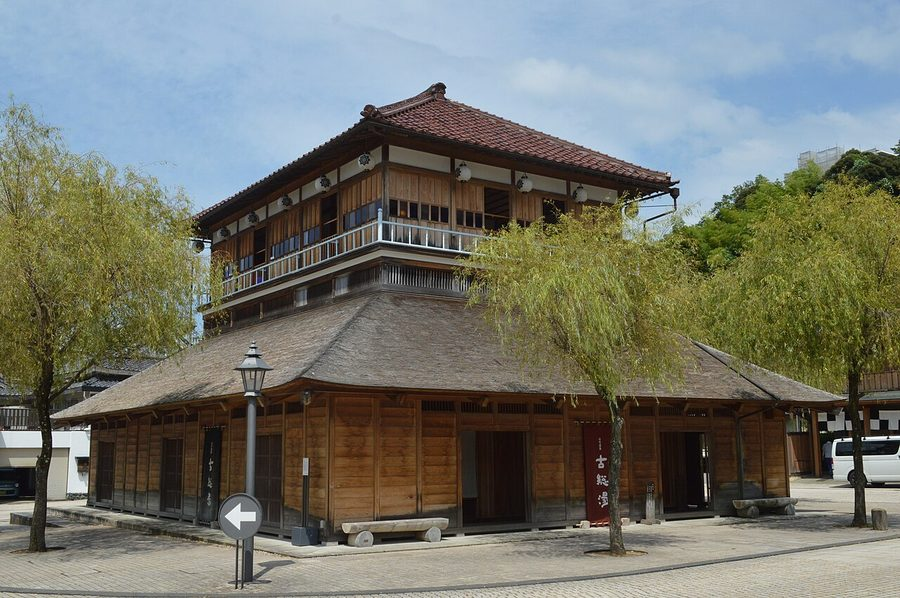
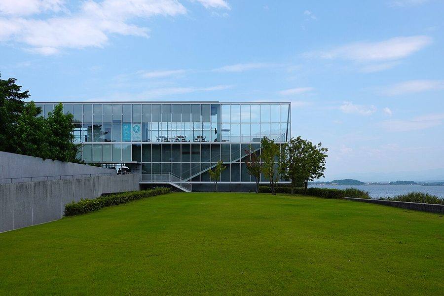

石川県加賀市の日帰り温泉・銭湯・サウナ（36件）
寄り道スポット検索アプリ「ヨッテコ」の収録データから、石川県加賀市の日帰り温泉・銭湯・サウナを営業時間・料金つきで一覧にしました（2026年8月時点）。
最も安いのは太子温泉共同浴場（460円）。最も遅くまで入れるのは天然温泉 加賀ゆめのゆ（翌1:00まで）。朝風呂なら山中温泉 白鷺湯たわらや（5:00開店）。
石川県加賀市はどんなまち？
数字で見る🔍石川県加賀市
まちの横顔




- 立地: 加賀市は石川県南西部、旧加賀国にあたる地域にある市です。福井県と接しています。
寄り道充実度（全国偏差値）
偏差値・順位は、ヨッテコ収録データ（2026年8月時点・26,033件）を市区町村別に集計した施設数の全国分布（1,728市区町村）から毎回算出しています。カードを押すとカテゴリ別の分析に切り替わります。
日帰り温泉から見た石川県加賀市
市内の日帰り温泉は36件、全国51位タイ（上位3.0%）。——寄り道できる湯の数は、全国でも上位クラス。
- 露天風呂がある店は67%、全国水準（46%）の1.4倍。石川県南西部、福井県と接する市。屋根のない湯船が当たり前、という土地柄なのでしょうか。
- 天然温泉を使う店は100%、全国水準（67%）の1.5倍。沸かし湯ではなく源泉が前提で、温泉そのものがまちの資源になっています。
- 夜の遅い時間に入れる店は47%。全国の40%を上回ります。一日の終わりに一風呂、という選択肢が残っています。
- 入浴料の中央値は1,000円でした（判明26件）。全国の650円と比べて54%高い水準です。旅先で入る湯としての価格帯です。
出典: 施設データ=ヨッテコ収録データ（26,033件・2026年8月時点）。偏差値・全国順位・全国水準は全1,728市区町村の分布から毎回算出。 / 人口=総務省「住民基本台帳に基づく人口、人口動態及び世帯数」（2026年1月1日現在） / 面積=国土地理院「全国都道府県市区町村別面積調」（2026年4月1日時点） / 森林率=農林水産省「2025年農林業センサス（農山村地域調査）」市区町村別林野率（2025年、林野率（林野面積÷総土地面積）） / 年平均気温=気象庁「平年値（1991-2020年）」。市区町村の代表点（国土交通省「大字・町丁目レベル位置参照情報」）から最も近い観測点の値 / まちの解説=日本語版Wikipedia「加賀市」（https://ja.wikipedia.org/wiki/加賀市、2026年8月21日取得） / 写真=Wikimedia Commons（各キャプションに作者・ライセンスを記載）
曜日別の営業施設数
| 月 | 火 | 水 | 木 | 金 | 土 | 日 |
|---|---|---|---|---|---|---|
| 35 | 31 | 34 | 34 | 34 | 35 | 35 |
火曜日が最も休みが多く（各5件が定休）、年中無休は31件です。※営業時間データのある36件で集計
入浴料金の分布（大人）
| 500円以下 | 8件 | |
| 501〜800円 | 2件 | |
| 801〜1,200円 | 7件 | |
| 1,201円以上 | 9件 |
料金が確認できた26件で集計。
施設一覧
| 施設 | 営業時間 | 料金（大人） |
|---|---|---|
| かのや光楽苑 天然温泉露天風呂 片山津温泉随一の湯量と泉質を誇る。源泉かけ流し。加水・加温をほとんど行わず、天然温泉そのままを楽しめる。塩分濃度が濃く、… | 15:00〜20:00 | 1,000円 |
| かよう亭 天然温泉 | 09:00〜18:00 | — |
| みどりの宿 萬松閣 天然温泉露天風呂サウナ 山代温泉の旅館みどりの宿萬松閣。露天風呂とサウナ、瞑想サウナを備えた温泉施設。 | 15:00〜18:00 | 2,750円 |
| ゆのくに天祥 天然温泉露天風呂サウナ | 11:00〜14:30 | 1,500円 |
| アパホテル＆リゾート 加賀片山津温泉 佳水郷 天然温泉露天風呂サウナ | 14:00〜22:00 | — |
| リブマックスリゾート 加賀山代 天然温泉露天風呂サウナ 加賀山代温泉の大型リゾート施設。露天風呂とサウナを備えた温泉施設で、複数の入浴形態を提供。 | 08:00〜22:00 ※曜日により異なる | 1,200円 |
| 別所温泉 天然温泉露天風呂サウナ | 11:40〜22:00 | 500円 |
| 加賀屋 宝生亭 天然温泉露天風呂 加賀市山代温泉の家族向け旅館宝生亭。貸切露天風呂と大浴場を備え、子供向け設備充実。 | 15:00〜20:00 | 2,000円 |
| 加賀片山津温泉 総湯 天然温泉 | 06:00〜22:00 | 500円 |
| 北陸金沢山中温泉 すゞや今日楼 天然温泉露天風呂 | 09:00〜18:00 | — |
| 大江戸温泉物語 Premium 加賀まるや 天然温泉露天風呂サウナ | 07:00〜10:00 | 900円 |
| 大江戸温泉物語 Premium山下家 天然温泉露天風呂 | 07:00〜24:00 ※曜日により異なる | 1,240円 |
| 大江戸温泉物語 山中彩朝楽 天然温泉サウナ 大江戸温泉物語グループの山中彩朝楽。日帰り入浴とディナーバイキングプランを提供。 | 07:00〜10:00 ※曜日により異なる | 700円 |
| 大江戸温泉物語 山代彩朝楽 天然温泉サウナ | 09:00〜18:00 | — |
| 大江戸温泉物語 片山津温泉ながやま 天然温泉露天風呂 | 07:00〜10:00 ※曜日により異なる | 1,020円 |
| 大江戸温泉物語Premium よしのや依緑園 天然温泉露天風呂サウナ | 07:00〜10:00 ※曜日により異なる | 900円 |
| 大江戸温泉物語Premium 山中グランドホテル 天然温泉露天風呂サウナ | 09:00〜18:00 | — |
| 大聖寺温泉 日谷町共同浴場 天然温泉 | 16:00〜21:00（火休） | 500円 |
| 天然温泉 加賀ゆめのゆ 天然温泉露天風呂サウナ 県内最大級のスーパー銭湯。岩盤浴、宴会、食事施設が充実した複合温泉施設。 | 06:00〜25:00 | — |
| 太子温泉共同浴場 天然温泉 | 16:00〜21:00（火休） | 460円 |
| 山中温泉 お花見久兵衛 天然温泉露天風呂サウナ 山中温泉のお花見久兵衛。日帰り温泉と文化体験が充実した旅館カフェ。 | 11:00〜18:30 | 1,650円 |
| 山中温泉 ゆけむり健康村 ゆーゆー館 天然温泉露天風呂 | 10:00〜22:00（火休） | 580円 |
| 山中温泉 湯畑の宿 花つばき 天然温泉露天風呂 山中温泉の純和風旅館花つばき。源泉かけ流しの混浴野天風呂『湯畑』が特徴。 | 15:00〜18:00 | 1,600円 |
| 山中温泉 白鷺湯たわらや 天然温泉サウナ 山中温泉の旅館。複数の浴場と貸切風呂を提供、駐車場完備。 | 05:00〜11:00 ※曜日により異なる | 3,300円 |
| 山中温泉 菊の湯第二 天然温泉 | 06:45〜22:00 | 500円 |
| 山中温泉総湯 菊の湯 天然温泉 | 06:45〜22:00 | 500円 |
| 山代温泉 みやびの宿 加賀百万石 天然温泉露天風呂サウナ 加賀山代温泉の高級旅館加賀百万石。自家源泉100％、露天風呂とサウナ、貸切家族風呂完備。 | 15:00〜22:00 | — |
| 山代温泉 古総湯 天然温泉 | 06:00〜22:00 | 500円 |
| 山代温泉 吉田屋山王閣 天然温泉露天風呂サウナ 山代温泉の高級旅館吉田屋山王閣。サウナと露天風呂、貸切風呂を備えた日帰り入浴施設。 | 14:00〜22:30 | 2,500円 |
| 山代温泉 総湯 天然温泉 1300年の歴史を持つ山代温泉の中心に位置する共同浴場「総湯」。加水なしの源泉を熱交換システムで提供する。隣接する「古総… | 06:00〜22:00 | 500円 |
| 彩華の宿 多々見 天然温泉露天風呂 | 15:00〜20:00 | — |
| 森の栖 リゾート＆スパ 天然温泉露天風呂サウナ 加賀山代温泉の高級リゾート施設。複数の大浴場とサウナを備えた宿泊施設。 | 14:00〜17:00 | — |
| 温泉めい想倶楽部 富士屋旅館 天然温泉 山代温泉の老舗旅館温泉めい想倶楽部富士屋旅館。第一号源泉を使用、複数の貸切風呂と大浴場。 | 15:00〜20:00 | 1,000円 |
| 湯の宿 白山菖蒲亭 天然温泉露天風呂 加賀山代温泉の優しいいで湯を源泉かけ流しで提供。露天風呂付き客室を備えた湯宿。 | 15:00〜18:00 | 1,500円 |
| 片山津温泉 季がさね 天然温泉露天風呂サウナ 片山津温泉の源泉100%を使用した温泉。塩分濃度の濃い温泉で湯上り後もポカポカが長く続く。 | 15:00〜21:00 | — |
| 癒しのリゾート・加賀の幸 ホテル アローレ 天然温泉露天風呂サウナ 加賀市の温泉ホテル。日帰り入浴を受け付けており、広大な駐車場を完備している。 | 08:00〜21:00 | 1,100円 |